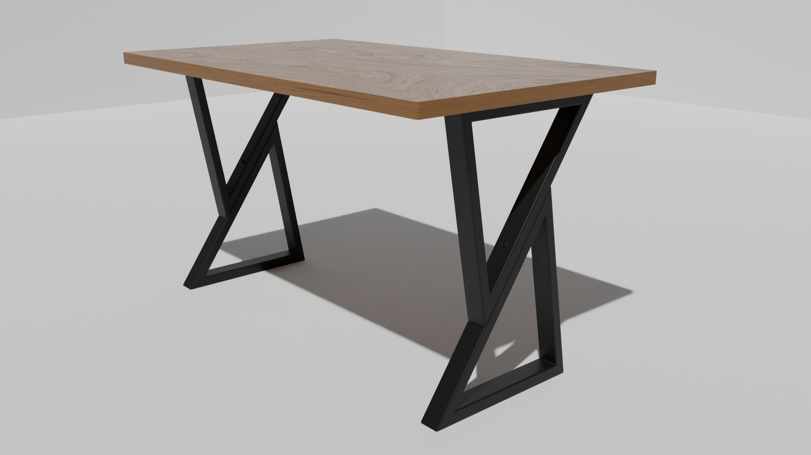

Портфолио
Работы
3D‑модели, визуализация, анимация, дизайн и проекты для печати. Поиск работает по названию, описанию и направлению.
8 проектовНовые — первыми

Fujifilm X‑S10
Моделирование, материалы и предметная анимация.
/1.webp)
Аудитория 455
Концепция и визуализация учебного пространства.

Обои с маяком
Атмосферная сцена и серия обоев для телефона.

Keycap‑подставка
Модель аксессуара, подготовленная к печати.

Город «Монополия»
Стилизованная сцена и анимационный ролик.

Стол LOFT K#1
Модель и презентация предмета мебели.

Камера SCI‑FI
Hard‑surface модель фантастической камеры.

Стол SCI‑FI
Дизайн и детализация фантастического объекта.
Ничего не найдено. Попробуйте изменить запрос или выбрать другой фильтр.